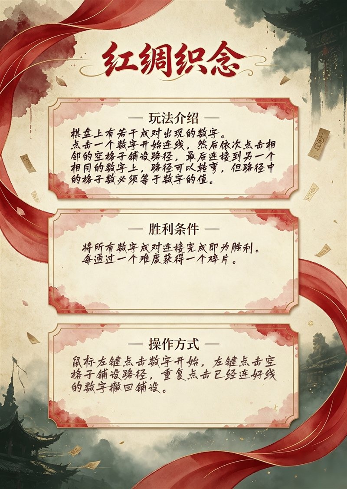
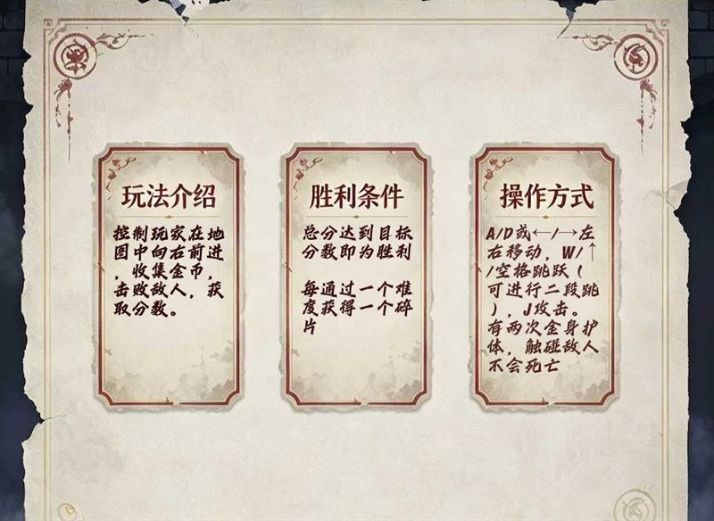
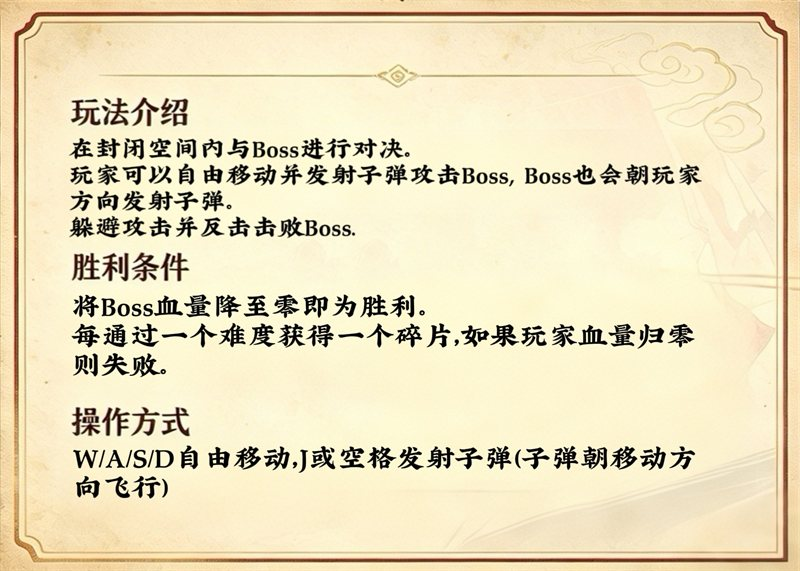
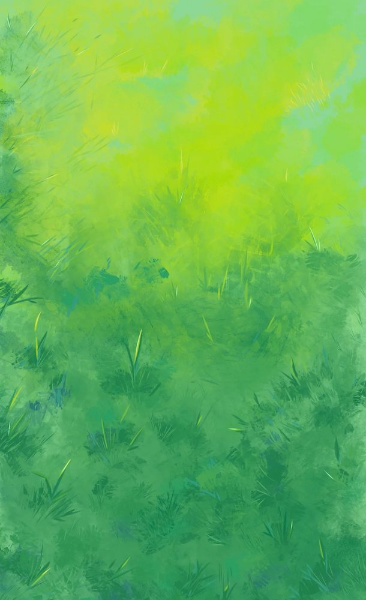
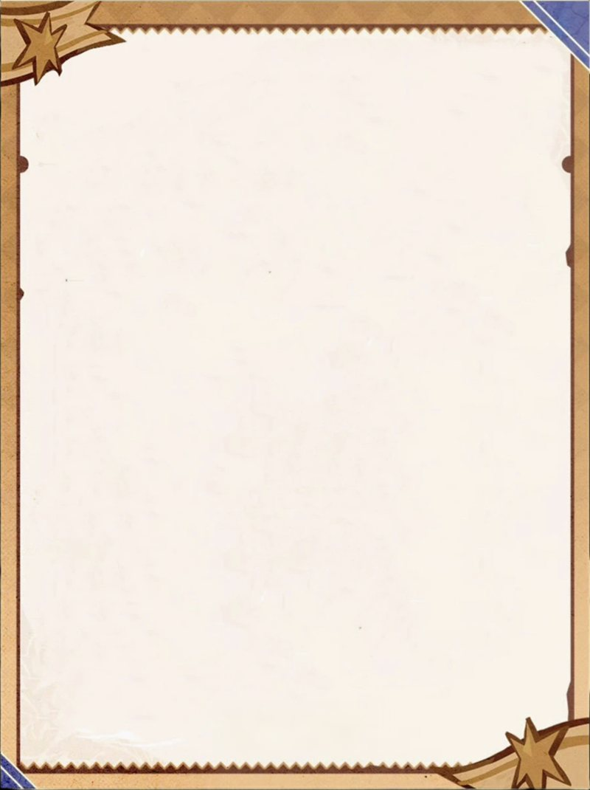
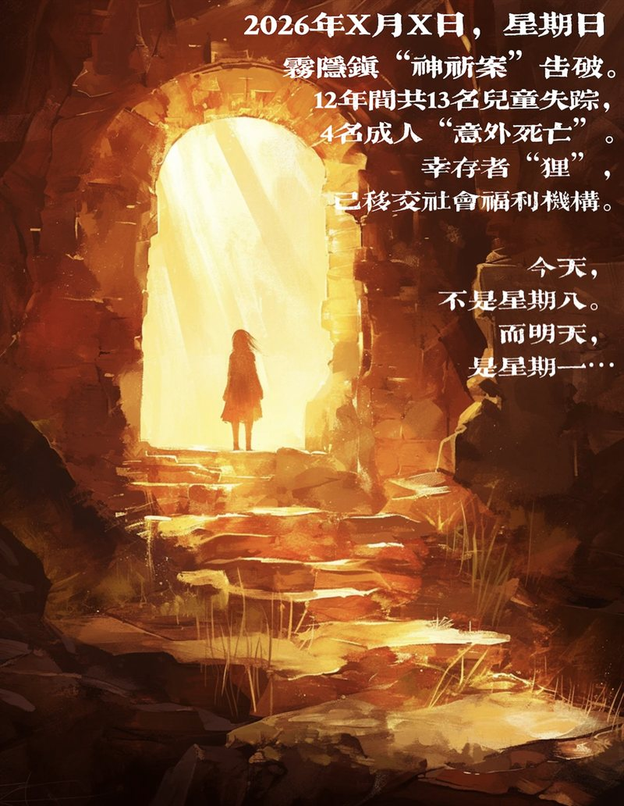

每通关一个难度获得一枚碎片，最多可收集 9 枚。

数字连线。点击数字后沿格子绘制路径，路径长度必须等于数字减一，把所有数字两两配对。

超级马里奥式平台跳跃。收集金币、踩踏敌人累积分数，敌人需要打击两次才会倒下。

空洞骑士式横版战斗。在平台间穿梭，与 BOSS 正面对决，血量见底之前先击败它。
主菜单、迷宫、排行榜与结局。



全部关卡都支持键盘操作。
| 场景 | 操作 |
|---|---|
| 迷宫 | WASD 或 方向键 移动 |
| 第一关 · 数字连线 | 鼠标点击数字开始连线，再点空格子绘制路径 |
| 第二关 · 超级马里奥 | WASD 移动，空格 跳跃 |
| 第三关 · 空洞骑士 | WASD 移动，J 攻击，空格 飞行 |
需要 Qt 5.9.9（MinGW 5.3.0 32bit）与 Windows 环境。
# 1. 克隆仓库 git clone https://github.com/Hengyu10003/The-Eighth.git cd The-Eighth # 2. 把 Qt 的 bin 目录加入 PATH set PATH=C:\Qt\Qt5.9.9\5.9.9\mingw53_32\bin;%PATH% # 3. 生成 Makefile 并编译 qmake The_eighth.pro -spec win32-g++ CONFIG+=release mingw32-make -j4 # 编译结果位于 release\The_eighth.exe
也可以直接修改 build.bat 里的 QT_PATH，然后双击运行一键编译。